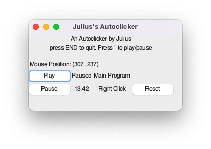

A desktop automation tool for repetitive keyboard/mouse input tasks.

I built this project because I wanted a simple way to automate repetitive mouse and keyboard actions without needing a full game or browser tool. It started as a practical experiment in desktop automation, and it grew into a little utility I could actually use.
A lot of the inspiration came from playing Roblox games with friends and family. A lot of those games are built around repetitive tasks, and I wanted a way to let the game keep running while I focused on something else. I also liked the idea of having a tool that was easy to pause, adjust, and control without much setup.
My first version was a script written in AutoIt, which worked for some simple tasks. But once I wanted more control over timing and input sequences, I switched to Python and built a more flexible version with PyAutoGUI, pynput, and Tkinter.
The end result is a lightweight desktop app that I actually use when I play games. It is something I actually wanted to use, and it gave me a chance to build a real tool around a problem I actually had.
Repetitive clicking and timed input actions are easy to ignore at first, but they get frustrating fast. I wanted something that could handle the repetitive parts for me, while still giving me control over when it was running and when it stopped.
Python, Tkinter, PyAutoGUI, pynput, and a modular row architecture for managing automation actions. The app is structured so different automation behaviors can be added without rewriting the main workflow.
This project taught me that even simple tools can get complicated fast, especially when they interact with the operating system and user input. I learned a lot about building a UI around real-world behavior, making controls feel intuitive, and keeping the app flexible as it grows.
AI draft: this page was drafted with GPT-4 and revised by me.